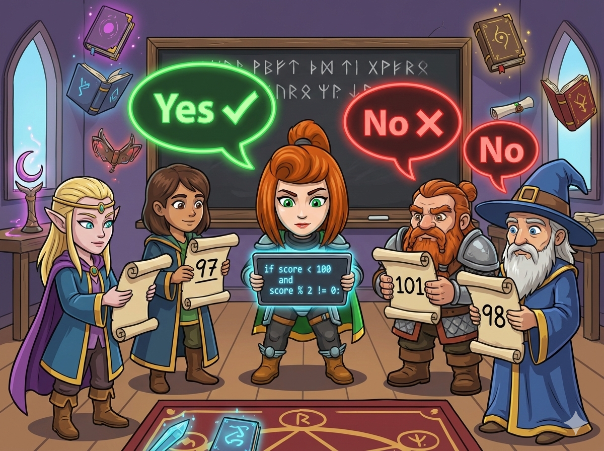

魔法学院的期末考试结束了 🏰。大家都在猜测安雅的成绩。 老师微笑着给出了两条关键线索：
1️⃣ 满分是 100 分： 所以分数必须 小于 100。
2️⃣ 奇数分数： 安雅的分数是一个 奇数。
👉 任务： 读入一个猜测的数字，判断它是否同时满足“小于 100”且“是奇数”。 如果满足，输出 Yes；否则输出 No。
我们要像侦探一样，同时检查两个条件是否都成立。
这就需要用到 逻辑与 (AND) 魔法，把两个条件锁在一起。
( c < 100 ) AND ( c % 2 != 0 )
小于 100 并且 是奇数
大家都在等你的推理结果，快写代码找出真正的魔法分数！
#include <iostream> using namespace std; int main() { // 1️⃣ 声明变量 c (猜测的分数) int c; // 2️⃣ 输入分数 cin >> c; // 3️⃣ 双重判断 // 条件1：c < 100 // 条件2：c % 2 == 1 (是奇数) if (c < 100 && c % 2 == 1) { cout << "Yes"; // 符合条件 } else { cout << "No"; // 不符合 } return 0; }
# 1️⃣ 输入：读取分数，存入变量 c c = int(input()) # 2️⃣ 双重判断 # 条件1：c < 100 # 条件2：c % 2 != 0 (是奇数) if c < 100 and c % 2 != 0: print("Yes") # 符合条件 else: print("No") # 不符合
⭐ 小技巧： 奇数除以 2 的余数一定是 1 (对于正整数)。所以 % 2 == 1 和 % 2 != 0 都可以用来判断奇数。